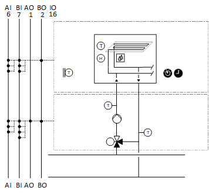

[CCr21] Cooling circuit, precontrol, dewpoint compensated flow temperature control
Plant example CCr21 is a cooling circuit for precontrol.
Functions
- Collects cooling requests
- Controls flow temperature
- Calculates dew point temperature and shifts the flow temperature setpoint
Plant diagram

Components
- Pump
- Valve
- Flow and return temperature sensor
- Room temperature sensor and room air humidity sensor
- Condensation monitor
- Outside air temperature sensor
Components and functions
Components and functions of the plant example:
Component | Function | BACnet object |
|---|---|---|
| Scheduler program Switches the plant to operating mode: Off | On | [MSchedule] Scheduler |
| Operating mode switch Switches the plant to: Auto | Off | On | [MI] Operating mode switch |
| Manual operating mode selection Switches the plant to: Auto | Off | On | [MCnfVal] Manual operating mode selection |
| Present operating mode Reports the present operating mode: Off | On | [MCalcVal] Present operating mode |
| Reason for present operating mode Reports the reason for the present operating mode: Exception | Operating mode switch | Manual operating mode selection | Cooling request | Scheduler | [MCalcVal] Reason for present operating mode |
| Demand Reports demand to heat generation: No | Yes | [BCalcVal] Demand |
| Outside air temperature sensor Measures outside temperature. | [AI] Outside air temperature |
| Room functions |
|
Room temperature sensor Measures room temperature. | > [AI] Room temperature | |
Room humidity sensor Measures room air humidity. | > [AI] Room air humidity | |
Dew point temperature calculation Calculates the dew point temperature. Increases the dew point temperature, for example, by 1K and corrects the setpoint for the flow temperature. | > [ACalcVal] Dew point temperature | |
Condensation monitor Monitors room air humidity Switches the plant off at too high a room humidity, e.g. in the area of chilled ceilings. | [BI] Condensation monitor | |
| Flow temperature sensor Measures the flow temperature. | [AI] Flow temperature |
| Pump |
|
Command Switches on/off the pump as needed. | > [BO] Command | |
Fault message Reports faults. Switches the plant off. | > [BI] Fault | |
Pump run when the outside air temperature is low Pump always operates at low outside temperatures (frost protection). |
| |
Kick function (pump kick) Prevents the pump from seizing during long idle periods. |
| |
| Return temperature sensor Measures the return temperature. | [AI] Return temperature |
Mixing valve Mixes the required amount of water from return to flow to achieve the desired flow temperature. |
| |
Temperature controller Controls the flow temperature. | > [Controller] Temperature controller | |
Positioning 0% = Bypass … 100% = Through-port | > [AO] Position |


 Room functions
Room functions


Functions and diagrams
Plant example CCr21 is a cooling circuit for precontrol; the flow temperature can be shifted based on dew point temperature.
Outside temperature
The outside temperature [TOa] is unfiltered.
Signal name | Description | Filter constant | Use |
|---|---|---|---|
|
TOa | Outside temperature | Unfiltered | Pump run when the outside air temperature is low |
Collect cooling requests
Cooling demand can be collected from different consumers. Binary demand messages and analog demand setpoints can also be collected.
The program receives an input block of type R_B (CReq(1)) that can be linked to a binary demand message via BACnet and an input block of type R_A (SpCReq(1)) for an analog demand setpoint.
Additional demand signals can be connected in parallel: Binary to an OR and analog to a MAX block.
Flow temperature control
The setpoint for flow temperature is derived from the lower setpoint for heat requests (SpHReqX) and the flow temperature setpoint.
BACnet objects
Name | Description | Object type | Default value |
|---|---|---|---|
|
PrSpTFl | Present flow temperature setpoint | ACalcVal |
|
|
SpTFl | Flow temperature setpoint | ACnfVal | 16 [°C] |
|
TDwp | Dewpoint temperature | ACalcVal |
|
The dew point temperature is calculated using room temperature and room air humidity. It is increased by 1K which also increases the flow temperature setpoint (maximum selection).
BACnet objects
Name | Description | Object type | Default value |
|---|---|---|---|
Vlv'TCtr | Temperature controller Controls the flow temperature. | Controller | N/A |
The temperature controller acts as a PI controller (PID with derivative action time Tv=0) and compares the temperature setpoint [PrSpTFl] against the flow temperature [TFl] and calculates the valve position [Pos] on the output. The following controller variables are preset: | |||
Plant operating modes and control sequence
Plant operating modes:
- Off (1)
- On (2)
The operating modes are reported on [MCalcVal] object 'Present operating mode'.
At the same time, the reason for the present operating mode is reported to another [MCalcVal] object:
- Exception (1)
- Operating mode switch (2), resulting from an active (not equal to Auto) operating mode switch
- Manual operating mode selection (3), resulting from an active (not equal to Auto) manual operating mode selection
- Cooling request (4)
- Scheduler (5), resulting from an active scheduler
There is a normal mode and local exception mode.
Normal mode
Sources for normal mode:
- [MI] Operating mode switch
- [MCnfVal] Manual operating mode selection
- Cooling request
- [MSchedule] Scheduler
In normal mode, components are simultaneously switched on and off as per the operating mode.
Exception mode
Sources for exception mode:
- Pump fault
- Condensation monitor
In exception mode, all outputs are switched off directly at priority 5 (the mixing valve is switched to bypass) and the present operating mode is set to 'Off'.
Start-up control and alarm handling
Start-up control (nested chart SttUpAlmHdl)
The following functionality is available for an automatic startup of the plant, e.g. after a loss of power and return of power:
- Fixed switch-on delay (can be set on input pin [DlySttUp])
- The plant remains off to ensure communications are reliable and cross-check references are triggered. 'Exception' is reported as the reason for the present operating mode.
- Automatic acknowledge (2x) of possible pending alarms during a fixed switch-on delay.
- Additional adjustable delay for staged plant ramp-up (can be set on input pin [DlyOn])
Alarm handling (nested chart SttUpAlmHdl)
The state of events on the plant is acquired by BACnet object 'Plant state'. The state is mapped on function block [CMN_EVT] Common event.
The following functions are available:
- Automatic acknowledge (2x) after startup
- Alarm acknowledgement with a value object
- Alarm indication:
- For pending alarms On
- For unprocessed alarms flashing - Ability to connect the acknowledge button [BI]
- Ability to connect to an alarm indication [BO], e.g. an alarm lamp through an output block [BO]
- Ability to connect to other alarm handling functions on other plants, e.g. acknowledge button and alarm indication for multiple plants in the same control cabinet
I/O data points
Name | Description | Type | Signal/connection | State text | Engineering unit |
|---|---|---|---|---|---|
OpModSwi | Operating mode switch | MI | N/A | Auto | Off | On | N/A |
TOa | Outside temperature | AI | LG-Ni1000 | N/A | -70...70 [°C] |
TFl | Flow temperature Alarm function: Basic (Notification class 8) Limit high 20 [°C]; limit low 4 [°C] Time deviation 30 [s] | AI | LG-Ni1000 | N/A | 0...100 [°C] |
TRt | Return temperature Alarm function: Basic (Notification class 8) Limit high 20 [°C]; limit low 4 [°C] Time deviation 30 [s] | AI | LG-Ni1000 | N/A | 0...100 [°C] |
CdnMon | Condensation monitor Alarm function: Basic (Notification class 8) Reference value: Tripped Time deviation: 0 [s] | BI | Contact NO | Normal | Tripped | N/A |
VlvPos | Valve position | AO | 0...10V | N/A | 0...100 [%] |
Pu'Cmd | Pump command | BO | Contact NO | Off | On | N/A |
Pu'Flt | Pump fault Alarm function: Extended (Notification class 7) Reference value: Tripped Time deviation 0 [s] | BI | Contact NO | Normal | Tripped | N/A |
TR | Room temperature | AI | LG-Ni1000 | N/A | 0...50 [°C] |
HuR | Room air humidity | AI | 0...10V | N/A | 0...100 [%RH] |